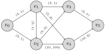

Dr. Ayad is driving from her home to Fantasi College. The town is connected by a series of one way streets, each labeled with the time it would take to traverse the road.
Give a network \(N\text{,}\) a path \(P\) from \(v_x\text{,}\)\(v_y\) is a sequence of consecutive edges \((v_{a_0}, v_{a_1}), \ldots (v_{a_i}, v_{a_{i+1}}),\ldots, (v_{a_{k-1}}, v_{a_k})\) where \(v_{a_0}=v_x, v_{a_k}=v_y\text{.}\) We say that the length of \(P\) is \(\displaystyle \sum_{i=0}^{k-1}w_{a_ia_{i+1}}\text{.}\) We say that the distance from \(v_x\) to \(v_y\text{,}\)\(d(v_x, v_y)\text{,}\) is the length of a shortest path from \(v_x\) to \(v_y\text{.}\)
We define a cycle in a weighted network to be a path from a vertex \(v_x\) to itself. If the length of a cycle is negative, we call it a negative cycle.
In this activity, we model the shortest path problem as a linear optimization problem. Assume \(N\) is a weighted network with no negative cycles. Let \(0\leq x_{ij}\leq 1\) where \(x_{ij}=1\) if \((v_i, v_j)\) is in a shortest path \(P\) from \(v_s\) to \(v_d\text{.}\)
INITIALIZE: Let \(R=\{v_s\}\) and let \(T=V\backslash R\text{.}\) Label \(\ell_s=0\text{,}\)\(\ell_i = w_{si}\) if \(w_{si}\) exists, \(\infty\) otherwise.
When the algorithm terminates, each \(\ell_j\) takes on the value \(d(v_s, v_j)\text{,}\) the length of the shortest path from \(v_s\) to \(v_j\text{.}\)
Take your previous choice of vertex \(v_k\) and repeat: look at the \(\ell_i\) of its potential predecessors and \(w_{ik}\text{.}\) Recursively repeat until we reach \(v_0\text{.}\)
Let \(|R|=m\geq 1\) and consider \(v_k, \ell_k\) as chosen in step 3. Show that \(\ell_k\) is the shortest distance from \(v_s\) to \(v_k\) traversing only vertices in \(R\cup \{v_k\}\text{.}\)
Suppose (by way of contradiction) that there was a shortest path \(P\) from \(v_s\) to \(v_k\) where the length of \(P\lt \ell_k\text{.}\) Show that there must be an edge in \(P\text{,}\)\((v_x,v_y\)) so that \(v_x\in R, v_y\not \in R, v_y\neq v_k\text{.}\)
INITIALIZE: Let \(R=\{v_s\}\) and let \(T=V\backslash R\text{.}\) Label \(\ell_s=0\text{,}\)\(\ell_i = w_{si}\) if \(w_{si}\) exists, \(\infty\) otherwise.
For each \(v_j\in V\text{,}\) let \(\ell_j=\min\{\ell_j, \ell_j+w_{kj}\}\text{,}\) if \(v_j\in R\) has a value changed by this process, remove \(v_j\) from \(R\) and add it to \(T\text{.}\)
Suppose a shipping company is moving goods through a series of transportation hubs via rail. The maximum capacity in tons and the cost in thousands of dollars per ton are listed as an ordered pair:

The pairs are (capacity, cost) pairs (denoted \((c_{ij}, w_{ij})\)), and we are trying to ship 10 tons of goods from \(v_0\) to \(v_5\text{.}\)
Let’s find a single path from \(v_0\) to \(v_5\) along which we could ship goods at the lowest possible cost. What criteria should we use to identify this path?
We model the shipping problem in Exploration 7.3.11 as a linear optimization problem. Let \(x_{ij}\) denote the quantity in tons of goods shipped from \(v_i\) to \(v_j\text{.}\)
Now in addition to decreasing the capacities of used edges by \(x_{ij}\text{,}\) add a backwards edge \((v_j,v_i)\) with capacity \(x_{ij}\) and negative weight \(-w_{ij}\text{.}\)
Pick any path from \(v_0\) to \(v_5\) that traverses a backwards negative edge. What does shipping along this path represent in terms of determining a new shipping procedure.
INITIALIZE: Let \(N=(V, E)\) be a weighted capacitated network with a unique source \(v_s\) and sink \(v_d\text{,}\) with no edges going into the source and no edges coming out of the sink. We start with the zero flow \(x_{ij}=0\) for each edge \((v_i, v_j)\text{.}\) Let \(F\) be the desired total flow.
Apply Dijkstra’s Shortest Path Algorithm on \(N'\) to find the shortest path from \(v_s\) to \(v_d\text{.}\) If no path exists STOP, there is no flow with total value \(F\text{.}\)